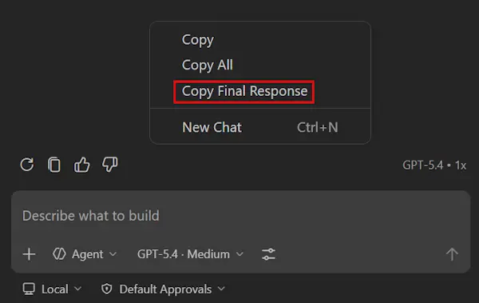
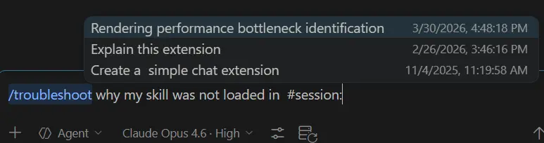

Visual Studio Code 1.114
_发布日期：2026 年 4 月 1 日_
欢迎来到 Visual Studio Code 1.114 版本。此版本的重点是简化聊天体验。
- 预览视频：在聊天附件和资源管理器上下文菜单的图像轮播中预览视频。
- 复制聊天响应：复制最终的 Markdown 聊天响应，以便轻松分享。
- 故障排除聊天：使用
/troubleshoot诊断之前会话中的聊天自定义问题。 - 简化的代码搜索：获得更快、更一致的语义搜索结果。
祝编程愉快！
聊天体验
图像轮播中的视频预览
设置：setting(imageCarousel.chat.enabled)、setting(imageCarousel.explorerContextMenu.enabled)
在 1.113 版本中引入的图像轮播现在也支持视频。您可以播放和浏览来自聊天附件或资源管理器上下文菜单的视频。
该查看器包括：
- 视频播放，带有控制按钮
- 导航，使用箭头或缩略图浏览所有图像和视频
复制聊天中的最终响应
聊天视图已经提供了复制整个对话或特定响应的命令。然而，这些命令也会包含代理的思考过程和工具调用。
对于那些只需要复制最终响应的情况，现在聊天上下文菜单中新增了复制最终响应命令，该命令会复制代理响应中的最后一个 Markdown 段落，即在所有工具调用执行之后的部分。

工作区搜索简化
#codebase 工具使 Copilot 能够对您的代码库进行语义搜索。这在拥有数万到数十万份文件的代码库中查找相关代码片段时尤其有用。
当 #codebase 工具首次推出时，它是为 Copilot 的提问流程设计的：您提出问题或请求编辑，Copilot 直接在其响应中产生结果。现在，几乎所有的 Copilot 交互都是代理式的，代理可以运行多个工具并迭代后才产生编辑或响应，原始的 #codebase 设计的许多部分已不再适用。
第一个重大变化是 #codebase 现在纯粹用于语义搜索。以前，它可以回退到不太准确（且效率较低）的模糊文本搜索。如果需要，代理仍然可以进行文本和模糊搜索，但我们希望将 #codebase 纯粹地聚焦在语义搜索上。
我们还简化了代码库索引的管理方式。正是这个索引使 #codebase 工具能够快速提供语义搜索结果。以前，我们有"本地索引"和"远程索引"的概念。本地索引被限制在几千个文件以内，并且不总是语义化的。远程索引则是为给定仓库远程存储的，可以在团队间共享，并支持数百万个文件。
现在只有一个单一状态：您的代码库是否已进行语义索引？不再区分本地和远程。在后台，索引的某些部分可能仍然存储在您的计算机上，而某些部分可能来自远程源，但您不再需要自行管理这些索引。
以下这些变化对使用 Copilot 意味着什么：
#codebase工具现在始终是语义化的，并提供一致的结果。- 当合理时，Copilot 会自动使用
#codebase进行语义搜索。我们按需为您构建索引，并自动使用它们。您不需要自行管理索引。 - 之前显示为"已索引"的工作区需要重新索引。这通常是因为它们使用的是本地的非语义索引。
- 特别大型的代码库如果没有 GitHub 仓库，目前可能无法被索引。我们正在逐步推出对这些代码库的索引支持。
即使您的工作区没有进行语义索引，我们发现您仍然可以通过 Copilot 的其他搜索方法（文本、grep、符号）获得良好的结果。
所有这些变化将使与代理的协作更快，并为模型提供更高质量的上下文。我们还相信这些变化简化了 Copilot 的使用，并使其更容易理解可用的工具。
更多详细信息，请参见工作区指南。
对历史聊天会话进行故障排除（预览）
设置：setting(github.copilot.chat.agentDebugLog.enabled)、setting(github.copilot.chat.agentDebugLog.fileLogging.enabled)
故障排除技能（通过 /troubleshoot 调用）通过分析代理调试日志并展示有关代理行为的洞察，帮助诊断聊天问题。例如，调查为什么自定义指令被忽略或响应变慢。
从本版本开始，您现在可以在故障排除时引用任何之前的聊天会话。这使得事后调查问题变得更加容易，无需再次重现问题。
要对之前的会话进行故障排除，请使用 /troubleshoot 命令并在提示中包含 #session。这将触发一个会话选择器，您可以从之前的聊天会话列表中进行选择。

提示：您也可以通过选择 +（添加上下文）> 会话来附加会话。
编程语言
TypeScript 6.0
我们的 JavaScript 和 TypeScript 支持现在使用 TypeScript 6.0。这一重大更新包含重要的修复和改进。值得注意的是，本次 TypeScript 版本还弃用了一些旧的选项，为 TypeScript 7.0 重写做准备。
您可以在 TypeScript 博客上阅读有关 TypeScript 6.0 版本的所有内容。
Python
- Python 环境扩展中对环境文件通知和环境管理器选择优先级的各种错误修复：
- 当前工作区保存的解释器选择现在会在重启后优先于终端激活的虚拟环境或 conda 环境。
- 环境文件更改通知现在包含"不再显示"选项，可永久关闭该通知。
- 当前工作区保存的解释器选择现在会在重启后优先于终端激活的虚拟环境或 conda 环境。
_vscode-python#25867、vscode-python-environments#1347、vscode-python-environments#1393_
- Python 环境扩展现在在检测到 Pixi 环境时会推荐社区 Pixi 扩展，并将 Pixi 包含在环境管理器优先级顺序中。_vscode-python-environments#1291_
企业版
用于禁用 Claude 代理的组策略
管理员现在可以使用组策略来禁用聊天中的 Claude 代理集成。应用此策略后，setting(github.copilot.chat.claudeAgent.enabled) 设置将由组织管理，用户无法启用 Claude 代理。
此策略配置为布尔值，键名为 Claude3PIntegration。在企业文档中了解更多关于设备管理策略的信息。
对扩展的贡献
GitHub Pull Requests
GitHub Pull Requests 扩展持续取得进展，该扩展使您能够处理、创建和管理拉取请求和问题。新功能包括：
- 创建 PR 视图中的分支名称现在已缓存，以加快目标分支的加载速度。
- PR 和问题概览 Web 视图中的 GitHub 永久链接现在会在工作区中存在该文件时打开对应的本地文件。
查看扩展的 0.134.0 版本更新日志，了解该版本的全部内容。
提议的 API
细粒度工具审批
具有审批流程的语言模型工具现在可以将审批范围限定到特定的参数组合。
例如，内置的"运行 VS Code 命令"工具可以运行任何 VS Code 命令。用户可能觉得始终批准 editor.action.formatDocument 没有问题，但不想批准其他命令。使用此 API，工具实现可以将审批范围限定到特定的命令，这样用户就可以逐一批准每个命令。
export interface LanguageModelToolConfirmationMessages {
/**
* 当设置时，将显示一个按钮，允许用户批准此特定的工具和参数组合。
* 该值显示为审批选项的标签。
*
* 例如，读取文件的工具可以将其设置为 `"允许读取 'foo.txt'"`，
* 这样用户就可以批准该特定文件，而无需批准该工具的所有调用。
*/
approveCombination?: string | MarkdownString;
}有关更多详细信息，请参见完整的 API 提案：细粒度工具审批。
查看在 Copilot Chat 扩展中使用该 API 的示例。
已弃用的功能和设置
本版本中新弃用的功能
无
即将弃用的功能
- 编辑模式自 VS Code 1.110 版本起已正式弃用。用户可以通过 VS Code 设置
setting(chat.editMode.hidden)暂时重新启用编辑模式。此设置将持续支持到 1.125 版本。从 1.125 版本开始，编辑模式将被完全移除，不再能通过设置启用。值得注意的问题修复
- microsoft/vscode #303908 修复在集成浏览器中，VS Code 快捷键优先于页面快捷键的问题
- microsoft/vscode #299777 修复在集成浏览器中调试暂停时"将元素添加到聊天"功能无法使用的问题
致谢
对我们的问题跟踪的贡献：
- @gjsjohnmurray (John Murray)
- @RedCMD (RedCMD)
- @IllusionMH (Andrii Dieiev)
- @albertosantini (Alberto Santini)
对 vscode 的贡献：
- @a77ming：修复代理会话欢迎页面的换行标题间距 PR #304686
- @AshtonYoon (Ashton Yoon)：修复 Markdown 预览中代码块的卡顿滚动问题 PR #287050
- @buley (Tay)：修复：销毁读取流以防止文件描述符泄漏 PR #303395
- @ConsoleTVs (Erik C. Forés)：修复(mcp)：解析代理插件 MCP 服务器定义中的环境变量 PR #303156
- @jonathanrao99 (Jonathan Thota)：浏览器：防止新标签页在快速选择器中闪烁 PR #304297
- @ShehabSherif0 (Shehab Sherif)
- 修复 fuzzyScore2 测试断言中的运算符优先级问题 PR #304449
- 修复性能视图中因复制粘贴错误导致启动计数被屏蔽的问题 PR #304452
- @Tyriar (Daniel Imms)：从通知、分类器、事件等模块中移除自身引用 PR #304498
- @xingsy97 (xingsy97)
- 键盘布局 - 替换 macOS 布局标签中的所有破折号和点号 PR #303971
- 编辑器 - 修复粘贴偏好过滤器匹配所有提供程序的问题 PR #304044
- 设置编辑器 - 避免重复刷新扩展列表 PR #303957
- 设置：使用本地 StopWatch 避免并发搜索之间的计时损坏 PR #304361
- mergeEditor：将 removeDiffs 从 O(K*N) 优化为单遍 O(N) PR #304404
- 时间线：修复切换窗格可见性时的内存泄漏 PR #304668
- 笔记本：修复未使用的单元格查找和损坏的选择去重问题 PR #305105
- 聊天 - 移除已弃用的提示属性拼写 PR #301976
- @yogeshwaran-c (Yogeshwaran C)
- 修复：防止终端面板覆盖 terminalEditorActive 上下文键 PR #304802
- 修复：使 HTML 示例代码片段现代化 PR #304818
- 修复：使测试图标颜色继承列表错误和警告的前景色 PR #304959
- 修复：为没有明确宽度和高度尺寸的 SVG 启用缩放 PR #304973
- 修复：在会话间持久化测试覆盖率排序顺序 PR #304979
- 修复：即使没有可见编辑器也将用户偏好发送到 TS 服务器 PR #304987
对 vscode-pull-request-github 的贡献：
- @Daniel-Aaron-Bloom：在 Web 视图中为永久链接添加本地文件链接 PR #8583
对 monaco-editor 的贡献：
- @pgoslatara (Pádraic Slattery)：杂项：更新过时的 GitHub Actions 版本 PR #5214
我们非常感谢大家在功能准备好后立即试用，请经常回到这里查看并了解最新动态。
>如果您想阅读之前 VS Code 版本的发布说明，请访问 code.visualstudio.com 上的更新页面。